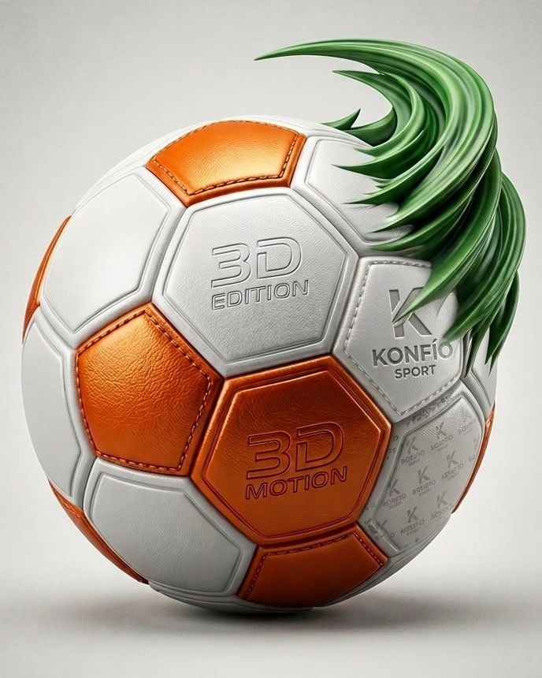

🏆 Mundial FIFA 2026 · Canadá · México · EE. UU.
KONFÍO SPORTS
Centro Oficial del Mundial FIFA 2026
Grupos, calendario y resultados oficiales del Mundial 2026. Toda la información de la Selección Colombia y enlaces directos a FIFA, Caracol y RCN — sin datos inventados, solo fuentes verificadas.
⚡ Próximo Partido · Colombia
--
Días
--
Horas
--
Min
--
Seg
Cargando próximo partido…

⚽ Grupos del Mundial 2026
12 grupos de 4 selecciones · sorteo oficial del 5 de diciembre de 2025
Importante: la composición de los grupos es información oficial fija del sorteo.
Para resultados y tablas en vivo, partido por partido, consulta siempre
FIFA.com.
🇨🇴 Selección Colombia
Grupo K · Néstor Lorenzo · Calendario oficial de la fase de grupos
Calendario · Fase de Grupos
Rivales del Grupo K
Clasifican a dieciseisavos los 2 primeros de cada grupo + los 8 mejores terceros del torneo.
Tabla de posiciones en vivo del Grupo K:
FIFA.com →
🏆 Fase Final
Camino a la final · Mundial FIFA 2026
1
Dieciseisavos
Ronda de 32 · nueva en 2026
2
Octavos
Ronda de 16
3
Cuartos
Ronda de 8
4
Semifinales
Ronda de 4
🏆
Final
19 jul · MetLife Stadium, East Rutherford NJ
Tercer puesto: 18 de julio de 2026 · Hard Rock Stadium, Miami.
Los cruces de cada llave dependen de los resultados de la fase de grupos.
Bracket y fechas exactas actualizadas en
FIFA.com →
📅 Calendario Oficial FIFA
Toda la información en vivo, directo desde la fuente oficial
🌍 Selecciones Destacadas
📡 Canales Oficiales
Transmisión del Mundial 2026 en Colombia y a nivel global
¿Por qué KONFÍO SPORTS?
Datos RealesGrupos y calendario oficial FIFA
SeguroSin malware
GratisSin pagos ocultos
Sin RegistroAcceso directo
OficialFIFA · Caracol · RCN
App PWAInstalable
Importante: KONFÍO SPORTS es un centro informativo del Mundial FIFA 2026 con datos verificados
del sorteo oficial (5 dic 2025) y calendario confirmado. Para resultados, marcadores y tablas
en vivo durante el torneo, los enlaces de esta página remiten siempre a
FIFA.com,
la fuente oficial. KONFÍO SPORTS no es un sitio afiliado a la FIFA.